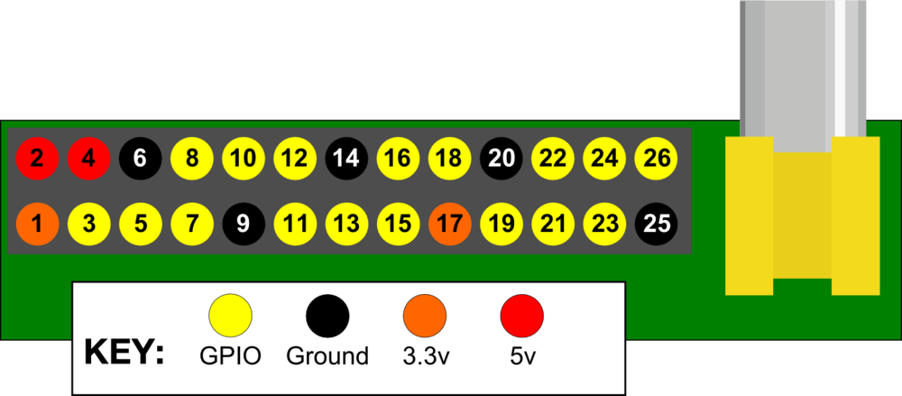

Raspberry Pi
Hacking the Pi
Introductions
How we will work
- Errors are opportunities!
- Think and follow intuitions
- Work together
- Google Everything
- Ask if above has failed
A quick word on Open Source
Installation & Configuration
Setting up our Pis
Setting up
- Raspberry Pi
- usb hub
- wifi dongle
- keyboard & mouse
- power supply unit (PSU)
Exercise - BASH basics
Work in Pairs
Question or errror. Intuition then Google
Gaols:
Navigate File System - Folders & Files
Open and close files
- ls
- pwd
- mkdir
- cd
- less
- nano
http://www.raspberrypi.org/documentation/usage/terminal/README.md
http://tutorial.djangogirls.org/intro_to_command_line/README.html
Relative Vs Absolute paths?
Questions
- What is a computer?
- What are the components of a computer?
- What is an Operating System?
- What is HardWare?
- What connects the two?
- What is a Raspberry Pi?
Raspberry Pi - HardWare

Exercise: Get HW info
pi@raspberrypi ~ $ lsusb
Bus 001 Device 002: ID 0424:9514 Standard Microsystems Corp.
Bus 001 Device 001: ID 1d6b:0002 Linux Foundation 2.0 root hub
Bus 001 Device 003: ID 0424:ec00 Standard Microsystems Corp.
Bus 001 Device 004: ID 7392:7811 Edimax Technology Co., Ltd EW-7811Un 802.11n Wireless Adapter [Realtek RTL8188CUS]
pi@raspberrypi ~ $ lsusb
Bus 001 Device 002: ID 0424:9514 Standard Microsystems Corp.
Bus 001 Device 001: ID 1d6b:0002 Linux Foundation 2.0 root hub
Bus 001 Device 003: ID 0424:ec00 Standard Microsystems Corp.
Bus 001 Device 004: ID 7392:7811 Edimax Technology Co., Ltd EW-7811Un 802.11n Wireless Adapter [Realtek RTL8188CUS]
How to Identify your keyboard?
configuration
Take a look at:
raspi-config
What does it do?
how does it relate to your usual system configuration tool?
raspi-config on a Mac?

Wifi & Modules
You say Driver, I say Module
Bridging HardWare and SoftWare
Exercise - Setting up WiFi
Work in Pairs! Internet will be needed
- Plug in your dongle and identify it using lsusb
- Find a way to list modules
Questions
- Its detected, but how does the OS know what to do with it?
- It doesn't work? Given the above what can we conclude?
Exercise: Get list of networks
pi@raspberrypi ~ $ sudo iwlist wlan0 scan
Too much information! Lets filter it.
pi@raspberrypi ~ $ sudo iwlist wlan0 scan | grep ESSID | grep City
ESSID:"city-lit-wireless"
Authenticate
$ sudo nano /etc/wpa_supplicant/wpa_supplicant.conf
Your /etc/wpa_supplicant/wpa_supplicant.conf should look like this:
ctrl_interface=DIR=/var/run/wpa_supplicant GROUP=netdev
update_config=1
network={
ssid="city-lit-wireless"
psk="5e5b7c296b58757c692"
}
Restart your Pi if it doesn't work
Check for Success
Ideas?
- flashing light
- Check in browser
startx ifconfig wlan0ping www.google.com
Operating Systems
- System Information
- Process Information
- Device Abstraction
Layers of Abstraction

Operating Systems
Getting info
uname -a
head /etc/issue
cat /proc/partitions
grep MemTotal /proc/meminfo
grep "model name" /proc/cpuinfo
hwinfo
lsmod
Getting OS info
Equivalent on Mac?
Equivalent on Windows?
Getting OS info

Process management Linux
Try these:
tophtop
Process management Mac
Resources
- Kernel_(operating_system) - Wikipedia
BASH
The command line UI
BASH
http://cli.learncodethehardway.org/book/
http://www.raspberrypi.org/documentation/usage/terminal/README.md
- Finding Help
- What's your computer name?
- Paths, Folders, Directories
- Directories: Make, Change, List, Remove
- Files: Making, copy, move, view, finding
- Pipes and Redirection
- Environment Variables
BASH Tips
history- Always Be TABing!!
- Ctl-r
- up arrows
- Ctl-a Ctl-e Jump to start/end of line
Aside
Type this:
pi@raspberrypi ~ $ python
Python 2.7.3 (default, Mar 18 2014, 05:13:23)
[GCC 4.6.3] on linux2
Type "help", "copyright", "credits" or "license" for more information.
>>> import os
>>> os.environ
{'LANG': 'en_GB.UTF-8', 'TERM': 'xterm-256color',
'SHELL': '/bin/bash',
'SSH_TTY': '/dev/pts/0',
'PWD': '/home/pi',
'LOGNAME': 'pi', 'USER': 'pi',
'PATH': '/usr/local/sbin:/usr/local/bin:/usr/sbin:/usr/bin:/sbin:/bin:/usr/local/games:/usr/games',
'MAIL': '/var/mail/pi',
'HOME': '/home/pi', }
>>>
exit and type this:
env
Which previous slide does this illustrate?
BASH Vs GUI
Lets explore the Desktop
startx
BASH Vs GUI
What are the differences?
- raspi-config Vs config files
- Which do you prefer?
- How long does it take to learn a UI?
Demo programs
Follow instructions here:
pi@raspberrypi /opt/vc/src/hello_pi $ less README
and:
http://www.raspberrypi.org/documentation/usage/demos/README.md
cd /opt/vc/src/hello_pi
./rebuild.sh
Exercise - Entering the Matrix
pi@raspberrypi /opt/vc/src/hello_pi/hello_world $ cd
pi@raspberrypi ~ $ cd /opt/vc/src/hello_pi/hello_world
pi@raspberrypi /opt/vc/src/hello_pi/hello_world $ od -c world.c
0000000 / / C l a s s i c H e l l o
0000020 W o r l d \n / / G R E G \n \n
0000040 # i n c l u d e < s t d i o .
0000060 h > \n \n i n t m a i n ( v o i
0000100 d ) \n { \n p r i n t f ( "
0000120 H e l l o w o r l d ! \ n " )
0000140 ; \n r e t u r n 0 ; \n }
0000160 \n
0000161
pi@raspberrypi /opt/vc/src/hello_pi/hello_world $
Scratch
A pedagogical tool for programming
http://scratch.mit.edu/
Scratch - Exercise
http://www.raspberrypi.org/documentation/usage/scratch/README.md
find a project you like on:
http://scratch.mit.edu/
Create your own
Scratch - Exercise
startx
Launch Scratch
Get the sprite to go round in a squre!
Scratch - Exercise
A Solution
Scratch - Exercise
A better Solution?
Intro to Python
http://python-intro.readthedocs.org/en/latest/index.html
Connections?
- Abstractions in Python & OS
- BASH commands & calling python functions
- Processes & turtle window closing
Raspberry Pi Electronics
Controlling electronics
Raspberry Pi Electronics
http://www.raspberrypi.org/documentation/usage/gpio/README.md

Raspberry Pi Electronics
BreadBoard
- Columns are linked
- Rows are linked
BPIO - Making a light shine
- wire: 1 Rpi (3.3v) <-> row 26
- LED: row 26 + (longer leg) <-> row 25 - (shorter leg)
- resistor: row 25 <-> - col
- wire: - col <-> 6 Rpi (ground)
Python to control BPIO
switch 1 Rpi (3.3v) to 7
pi@raspberrypi ~ $ sudo ipython
In [1]: import RPi.GPIO as GPIO
In [2]: GPIO.setmode(gpio.BOARD)
In [3]: GPIO.setup(7, gpio.OUT)
In [4]: GPIO.output(7, True)
In [5]: GPIO.output(7, False)
Blinking LED
pi@raspberrypi ~ $ sudo ipython
In [1]: import RPi.GPIO as GPIO
In [2]: from time import sleep
In [3]: GPIO.setmode(GPIO.BOARD)
In [4]: GPIO.setup(7, GPIO.OUT)
In [5]: for _ in range(5):
....: GPIO.output(7, True)
....: sleep(1)
....: GPIO.output(7, False)
....: sleep(1)
....:
Imagine the possibilities
Robotics
Home automation
Time lapse photography
Google for amazing uses!!
The End
Thank You all
Feedback forms please
Docs will be published
Leave me emails to be notified